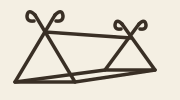
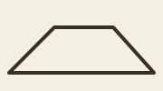
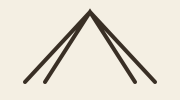
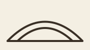
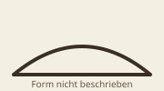
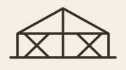
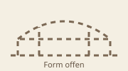
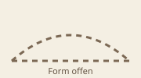
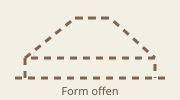
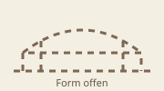

Zeltformen 750–1050¶
Informationen
- Thema
- Zeltformen
- Zeitraum
- ca. 750–1050
- Stand
- 2026-07-29
Diese Übersicht vergleicht Zeltformen, die zwischen etwa 750 und 1050 archäologisch, bildlich oder schriftlich belegt sind und in Regionen des skandinavisch-rusischen Kontakt- und Fernhandelsraums vorkamen. Zeitgleich bedeutet nicht automatisch, dass eine Form in Skandinavien verwendet wurde. Unterschieden werden deshalb der Beleg für das Zelt selbst und die Nachweisbarkeit des Kontakts zu Skandinaviern oder Rus.
Überblick¶
| Formskizze | Region/Kultur | Zeit | Beziehung zu Skandinaviern/Rus | Beleglage |
|---|---|---|---|---|
 |
Oseberg, Norwegen | Grablegung 834 | unmittelbar skandinavisch | erhaltene Holzgestelle; Plane nicht erhalten |
| Gokstad, Norwegen | um 900 | unmittelbar skandinavisch | vier Bretter; Zeltfunktion ist Nicolaysens Deutung | |
 |
Frankenreich; später angelsächsische Kopie | ca. 825–830; frühes 11. Jh. | direkte Nordsee-, England- und Frankenkontakte | zeitgenössische bzw. kopierte Buchmalerei |
 |
Sámi, Nordskandinavien | historische Tradition; konkrete Form für 750–1050 unsicher | unmittelbare Nachbarschaft und Austausch | ethnografisch belegt, Rückdatierung unsicher |
 |
Sámi, Nordskandinavien | historische Tradition; konkrete Form für 750–1050 unsicher | unmittelbare Nachbarschaft und Austausch | ethnografisch belegt, Rückdatierung unsicher |
 |
Oğuz, eurasische Steppe | 921–922 | Begegnung im selben Wolga-Kontaktraum | Augenzeugenbericht Ibn Faḍlāns; Haarzelte und türkische qubbas, Konstruktion nicht beschrieben |
 |
türkische/abbasidische Welt | Mitte 8.–frühes 11. Jh. | Kontakt über Wolga, Rus und islamische Handelsnetze | schriftlich und begriffsgeschichtlich untersucht |
 |
Abbasidenreich | 8.–10. Jh. | Dirhamhandel; Gesandtschaft zu den Wolgabulgaren | Zelte schriftlich behandelt; hier keine einheitliche Form rekonstruiert |
 |
Wolgabulgaren/Chasaren | 9.–10. Jh. | unmittelbare Handelspartner und Herrschaftskontakte der Rus | Kontakt belegt; keine hinreichende Formquelle ermittelt |
 |
Byzantinisches Reich | 9.–11. Jh. | Rus-Handel, Verträge, Kriegszüge und Warägerdienst | Kontakt belegt; keine hinreichende Formquelle ermittelt |
 |
Tang-China/Ostasien | 8.–10. Jh. | überwiegend indirekte Warenketten über Zentralasien | zeitgleich; keine hinreichende Form- oder Anwesenheitsquelle ermittelt |
Oseberg: Gestelle mit gekreuzten Giebelscherbeinen¶
Vergleichs- und Rekonstruktionsquellen¶
Matthew Marinos dokumentierter Nachbau betrifft das kleinere Oseberg-Zeltgestell. Die textile Hülle und zahlreiche konstruktive Entscheidungen sind moderne Rekonstruktion, keine erhaltene Originalplane. Besonders aussagekräftige, visuell geprüfte Abbildungen:
- PDF-S. 1: vollständige Außenansicht des aufgebauten Nachbaus mit Person als Größenvergleich;
- PDF-S. 14: vollständiges, noch unbedecktes Holzgestell mit den von Marino ergänzten gekreuzten Seilverspannungen;
- PDF-S. 15: aufgerichteter Giebelrahmen sowie Nahaufnahme des Knotens, an dem Bodenlängsstange, Scherbein, Querholz, Seil und Holzpflock zusammentreffen;
- PDF-S. 16: vollständige Außenansicht mit aufgebrachter rot-weißer Leinenhülle bei einer Hurstwic-Winterveranstaltung.
Das Dokument nennt auf S. 1 © 2008 Matthew Marino und „Additional photographs © 2006–2008 William R. Short“, aber keine freie Nachnutzungslizenz. Deshalb werden die Fotos hier nur mit genauen Seitenfundstellen nachgewiesen und weder lokal übernommen noch eingebettet.
Form und Konstruktion¶
Im Oseberg-Schiffsgrab lagen Teile von zwei hölzernen Zeltgestellen. Die Rekonstruktionsskizzen in Osebergfundet Band 2 ordnen die Teile bei beiden Zelten jeweils zu zwei Giebeln mit zwei gekreuzten Scherbeinen mit Tierkopfenden und einem Querbrett. Die beiden Giebel werden jeweils durch drei Längsstangen verbunden: eine Firststange und zwei untere seitliche Bodenlängsstangen.
Eine zugehörige Zeltplane, ihr Material, Zuschnitt und ihre Befestigung sind nicht erhalten. Die Publikationsskizzen rekonstruieren die Anordnung der fragmentierten Holzteile; sie dokumentieren nicht die Fundlage eines aufgebauten Zelts.
Quellen zur Datierung¶
Oseberg liegt in Vestfold, Norwegen; die Grablegung wurde dendrochronologisch auf 834 datiert. Genauer wissenschaftlicher Vollnachweis der Dendrodatierung mit Seitenangabe: in den ausgewerteten Quellen noch nicht ermittelt.
Belegart und Grenzen¶
Die fragmentarisch erhaltenen Holzteile sind der stärkste skandinavische Sachbeleg. Die in Abb. 159 und 162 gezeigten Gestelle sind Rekonstruktionsskizzen der Fundpublikation auf Grundlage der Fragmente und Grabungs-Aufmaßzeichnungen, nicht erhaltene Aufbauten. Moderne Zeltbahnen und Eingangslösungen sind Rekonstruktionen. Eine neuere Nachbaupublikation weist außerdem darauf hin, dass Teile der zwei Gestelle in der älteren Aufarbeitung möglicherweise miteinander vermischt wurden.
Größe¶
Die Fundpublikation gibt für das große Zelt eine innere Grundfläche von ungefähr 5,30 × 4,50 m und eine Innenhöhe von knapp 3,50 m an (Osebergfundet Band 2, Buch-S. 250 / PDF-S. 264). Für das kleine Zelt nennt sie eine Grundfläche von 5,30 × 4,15 m und eine Innenhöhe von ungefähr 2,70 m (Buch-S. 257 / PDF-S. 271). Es sind Angaben der Publikation zur rekonstruierten Anordnung, keine Maße einer erhaltenen Plane.
Quellen zum Zelt-/Formbeleg¶
Primäre Fundpublikation: Grieg, Sigurd, Osebergfundet, Band 2, Kristiania 1928. Der lokale Scan enthält die maßgeblichen Text- und Bildstellen: großes Zelt und Maße auf Buch-S. 250–251 / PDF-S. 264–265, Abb. 159 auf Buch-S. 251 / PDF-S. 265, Windbrettdetails Abb. 160–161 auf Buch-S. 255 / PDF-S. 269, Maße des kleinen Zelts auf Buch-S. 257 / PDF-S. 271 und Abb. 162 auf Buch-S. 259 / PDF-S. 273.
Ergänzend verweist die Nachbaupublikation für die kleinen Lochpaare am Scherbein Nr. 318 auf Band 1, Abb. 124, für die Tierkopfenden auf Band 2, Tafel 19 und für die historische Farbbeschreibung auf Band 3, S. 403. Diese Fundstellen sind gegenüber allgemeinen Reenactment-Seiten vorrangig.
Fundzeichnungen in Marinos PDF: Marino reproduziert auf PDF-S. 3 die Gesamtanordnung des kleineren Gestells aus Osebergfundet Band 2, Abb. 162: vier gekreuzte Scherbeine, zwei Querbretter sowie First- und Bodenlängsstangen. Auf derselben Seite ist zusätzlich eine Stange mit Zapfen und Sicherungsstift abgebildet. PDF-S. 5 reproduziert das Scherbein Nr. 318 mit den kleinen Lochpaaren nach Osebergfundet Band 1, Abb. 124. PDF-S. 6 zeigt Marinos Umzeichnungen der Tierkopfenden nach Osebergfundet Band 2, Tafel 19.
Die Gestellzeichnung auf PDF-S. 3 ist gegenüber der historischen Vorlage farbig codiert und damit keine bloße unveränderte Faksimilereproduktion. Das PDF nennt keine freie Nachnutzungslizenz. Deshalb wurde daraus kein lokaler Ausschnitt übernommen. Stattdessen sind oben die unveränderten Ausschnitte der primären Fundpublikation mit genauer Buch- und PDF-Seite eingebunden; ihre Veröffentlichungslizenz ist noch ungeklärt.
- Marino 2008, PDF-S. 3 und 5–6
- International Expert Committee 2012: Risikobewertung der Schiffe und Sammlung einschließlich der Zelt-Windbretter
Gokstad: als Zeltgiebelseiten gedeutete Bretter¶
Vergleichs- und Rekonstruktionsquellen¶
Kein eigenständiges, quellenkritisch verifiziertes Replikfoto der von Nicolaysen vorgeschlagenen Gokstad-Konstruktion ermittelt.
Form und Konstruktion¶
Nicolaysen beschreibt zwei Paare, insgesamt vier gleichartig geformte Eichenbretter mit Tierkopfenden, Löchern und Ausschnitten. Er deutete sie als paarweise gekreuzte Giebelrandbretter eines Schiffszelts. Die gekreuzte Zeltanordnung ist seine Rekonstruktion, nicht die Fundlage selbst.
Die verzierten Gokstad-Bettpfosten sind eine andere Objektgruppe und dürfen nicht als Zeltpfosten verwendet werden.
Quellen zur Datierung¶
Gokstad liegt in Vestfold, Norwegen; der Schiffsgrabfund gehört in die Zeit um 900. Der hier verwendete Primärnachweis ist Nicolaysen 1882; ein aktueller dendrochronologischer Vollnachweis mit genauer Seite wurde in dieser Recherche nicht ermittelt.
Belegart und Grenzen¶
Gesichert sind die Bretter und ihre Bearbeitung. Ihre Verwendung als Zeltteile und die gekreuzte Aufstellung beruhen auf Nicolaysens Deutung, die er mit wesentlich jüngeren niedersächsischen Giebelbrettern verglich. Eine Plane ist nicht erhalten.
Größe¶
Nicolaysen nennt im Text keine Maße. Seine Tafel XI zeigt die Einzelteile im Maßstab 1:10 und die rekonstruierte Stellung im Maßstab 1:30; belastbare Maße müssten direkt aus der Tafel erhoben und als solche gekennzeichnet werden.
Quellen zum Zelt-/Formbeleg¶
Primärbeleg: Nicolaysen, Langskibet fra Gokstad, Christiania 1882, S. 41; Tafel XI, Fig. 2–6. Fig. 2–5 dokumentieren die Tierkopfenden und Bearbeitungsmerkmale; Fig. 6 ist Nicolaysens Rekonstruktion der gekreuzten Stellung. Damit sind Objektzeichnung und Rekonstruktionsvorschlag innerhalb derselben Tafel quellenkritisch zu trennen.
- Fundbeleg mit gemeinfreier Tafel XI und Transkription
- getrennte Gokstad-Bettpfosten
- Nicolaysen 1882, S. 41 und Tafel XI
Karolingisches und angelsächsisches Firstzelt¶
Vergleichs- und Rekonstruktionsquellen¶
Foto und Herstellerseite: Tentorium
Form und Konstruktion¶
Der um 825–830 entstandene Utrecht-Psalter zeigt niedrige Zelte mit einer Firstlinie, geneigten Seiten und dreieckigen Enden. Die Bilder belegen die dargestellte Form, aber keinen vollständigen Stangenplan, keine Verbindungen und keinen Stoffzuschnitt.
Der frühe angelsächsische Harley-Psalter übernimmt zahlreiche Illustrationen aus dem Utrecht-Psalter. Er ist damit kein unabhängiger archäologischer Beleg für einen besonderen „sächsischen“ Zelttyp.
Quellen zur Datierung¶
Der Utrecht-Psalter entstand im karolingischen Raum; der Harley-Psalter im frühen 11. Jahrhundert in Canterbury. Vollnachweise: Universiteitsbibliotheek Utrecht, MS 32, Sammlungsdatierung ca. 820–830; British Library, Harley MS 603, Katalogdatierung 1. Hälfte 11. Jahrhundert, jeweils über die unten verlinkten institutionellen Kataloge, abgerufen 2026-07-29.
Quellen zur Beziehung der Region/Kultur zu Skandinaviern und Rus¶
Für politische, militärische oder wirtschaftliche Kontakte des Frankenreichs und des angelsächsischen England mit Skandinaviern im behandelten Zeitraum nennt dieser Eintrag bislang keinen belastbaren Einzelbeleg mit genauer Fundstelle. Der Handschriftennachweis belegt die karolingische beziehungsweise angelsächsische Bildtradition; er ist davon getrennt zu lesen und belegt keinen Formtransfer.
Belegart und Grenzen¶
Es handelt sich um Buchmalerei mit möglicher Übernahme älterer Bildtraditionen, nicht um technische Dokumentation. Begründbar ist ein niedriges, giebelartiges Firstzelt; Details moderner „Geteld“-Rekonstruktionen sind jeweils gesondert zu begründen.
Größe¶
Historische Maße sind aus diesen Bildquellen nicht bestimmbar.
Quellen zum Zelt-/Formbeleg¶
Historische Bildbelege – Utrecht-Psalter: Utrecht, Universiteitsbibliotheek, MS 32. Die folgenden vier vollständigen Folioseiten wurden direkt über das offizielle IIIF-Bildsystem in hoher Auflösung geprüft. Die Zeichnungen belegen dargestellte Hüllen und Zeltformen, aber keinen Stangenplan.
- Offizieller Viewer: fol. 15r, Viewer-Seite 37
- Offizieller Viewer: fol. 34v, Viewer-Seite 76
- Offizieller Viewer: fol. 48v, Viewer-Seite 104
- Offizieller Viewer: fol. 71v, Viewer-Seite 150
- Offizielles IIIF-Manifest des Utrecht-Psalters, MS 32
Historisches Vergleichsbild – Harley-Psalter: British Library, Harley MS 603, fol. 33r, obere Miniatur zu Psalm 60. Rechts ist eine giebelartige, an einem horizontalen Kopfholz aufgehängte Hülle mit sitzender Figur dargestellt. Der offizielle Katalog nennt das Motiv „tented tabernacle“. Derselbe Katalog hält fest, dass die Illustrationen des Harley-Psalters vom Utrecht-Psalter kopiert wurden; Harley ist daher kein unabhängiger Formbeleg.
-
British Library, Harley MS 603: Katalogdatensatz und IIIF-Manifest
-
Universität Utrecht: Utrecht-Psalter
- British Library: Harley MS 603
Samisches Lavvu¶
Vergleichs- und Rekonstruktionsquellen¶
Ursprungsdatensatz: Arkivverket, „Vasalos lavo ved Rieppjaevre“ · Datei- und Rechtenachweis: Wikimedia Commons, keine bekannten urheberrechtlichen Beschränkungen
Ursprungsdatensatz: Nasjonalmuseet, NMK.2021.0112.023 · Datei- und Rechtenachweis: Wikimedia Commons, Public Domain
Form und Konstruktion¶
Das ethnografisch dokumentierte Lavvu ist ein konischer Bau aus geraden, oben zusammenlaufenden Stangen mit einer darübergelegten Hülle. Diese Beschreibung belegt die historische samische Tradition, aber nicht automatisch einen unveränderten Stangenplan für das 9. oder 10. Jahrhundert.
Quellen zur Datierung¶
Für den konkreten Stangenplan in 750–1050 wurde kein belastbarer Datierungsbeleg ermittelt. Store norske leksikon dokumentiert die ethnografische Form, ist aber kein wikingerzeitlicher Datierungsnachweis.
Quellen zur Beziehung der Region/Kultur zu Skandinaviern und Rus¶
Sápmi und die skandinavischen Siedlungsräume lagen in unmittelbarer nordskandinavischer Nachbarschaft. Für konkrete Austausch-, Abhängigkeits- oder Reisebeziehungen im Zeitraum 750–1050 nennt dieser Eintrag bislang jedoch keinen belastbaren Einzelbeleg mit genauer Fundstelle. Die geographische Nachbarschaft ist vom wesentlich jüngeren ethnografischen Lavvu-Beleg zu trennen.
Belegart und Grenzen¶
Die gut dokumentierte Bauform ist überwiegend ethnografisch überliefert. Eine präzise Datierung dieser konkreten Konstruktion in den Zeitraum 750–1050 ist mit den hier ausgewerteten Quellen nicht möglich.
Größe¶
Wikingerzeitliche Maße sind nicht überliefert. Jüngere ethnografische und moderne Maße dürfen nicht als historische Maße zurückprojiziert werden.
Quellen zum Zelt-/Formbeleg¶
Belegbild: Kein zeitgenössisches Belegbild für 750–1050 ermittelt. Abbildungen beim verlinkten Lexikon zeigen die wesentlich später ethnografisch dokumentierte Form und dürfen nicht als wikingerzeitliche Bildquelle gelesen werden; wegen unklarer Bildlizenz wurde kein Foto lokal übernommen.
Samische Goahti¶
Vergleichs- und Rekonstruktionsquellen¶
Ursprungsdatensatz: Norsk Folkemuseum / DigitaltMuseum, NF.05507-024 · Datei- und Lizenznachweis: Wikimedia Commons, CC BY-SA 4.0
Ursprungsdatensatz: Norsk Folkemuseum / DigitaltMuseum, NF.05507-025 · Datei- und Lizenznachweis: Wikimedia Commons, CC BY-SA 4.0
Form und Konstruktion¶
Die Goahti kann ein Gerüst aus zwei gebogenen Rahmen besitzen, die durch Längshölzer verbunden und mit weiteren Stangen ergänzt werden. Es existieren auch festere Ausführungen; „Goahti“ bezeichnet deshalb nicht nur eine einzige Zeltkonstruktion.
Quellen zur Datierung¶
Für die konkrete Bogenrahmenkonstruktion in 750–1050 wurde kein belastbarer Datierungsbeleg ermittelt. Store norske leksikon dokumentiert die ethnografische Form, ist aber kein wikingerzeitlicher Datierungsnachweis.
Quellen zur Beziehung der Region/Kultur zu Skandinaviern und Rus¶
Sápmi und die skandinavischen Siedlungsräume lagen in unmittelbarer nordskandinavischer Nachbarschaft. Für konkrete Austausch-, Abhängigkeits- oder Reisebeziehungen im Zeitraum 750–1050 nennt dieser Eintrag bislang jedoch keinen belastbaren Einzelbeleg mit genauer Fundstelle. Die Kontaktfrage ist unabhängig von der Rückdatierung der ethnografisch belegten Goahti-Konstruktion.
Belegart und Grenzen¶
Die Bogenrahmenkonstruktion ist ethnografisch gut beschreibbar. Ihre unveränderte Rückdatierung in die Wikingerzeit ist nicht belegt. Sie ist daher als traditionsgestützte Vergleichsform, nicht als sicherer Zelttyp des 9. Jahrhunderts zu behandeln.
Größe¶
Wikingerzeitliche Maße sind nicht überliefert.
Quellen zum Zelt-/Formbeleg¶
Belegbild: Kein zeitgenössisches Belegbild für 750–1050 ermittelt. Die Bilder beim verlinkten Lexikon illustrieren spätere ethnografische Ausführungen; ihre Lizenz wurde für eine lokale Übernahme nicht als eindeutig frei verifiziert.
Oğuz-Zelte nach Ibn Faḍlān: Haarzelte und türkische qubbas¶
Keine rekonstruierbare Form / kein seriöses Replikfoto: Der arabische Primärtext nennt Haarzelte (buyūt šaʿr) und türkische qubbas, beschreibt aber keinen vollständigen Stangenplan. Filz wird in diesen Passagen nicht genannt. Ein modernes Ger wäre daher keine Oğuz-Replik.
Form und Konstruktion¶
Aḥmad ibn Faḍlān berichtet auf seiner Reise 921–922 über die Oğuz:
- Abschnitt 7: „لهم بيوت شعر، يحلون ويرتحلون“ – sie haben Haarzelte/-häuser und schlagen ihr Lager auf und wieder ab.
- Abschnitt 8: Bei der Ankunft eines Gastes wird für ihn eine qubba errichtet.
- Abschnitt 10, bei Etrek: „فضرب لنا قباباً تركية“ – für die Gesandtschaft werden türkische qubbas aufgeschlagen.
Damit sind mobile textile Behausungen belegt. Der Text nennt jedoch keinen vollständigen Grundriss, kein Scherengitter, keinen Dachkranz und keine Maße. Auch die Übersetzung von qubba als eine bestimmte moderne Jurtenkonstruktion wäre mehr, als die Passage selbst aussagt.
Quellen zur Datierung¶
Die Datierung 921–922 folgt der Reiseüberlieferung Ibn Faḍlāns. Vollnachweis: Ibn Faḍlān 1959: Risālat Ibn Faḍlān, hg. Sāmī ad-Dahhān, Damaskus 1959, Abschnitt „عند الغزية“, §§ 7–10, Handschriftenmarken 200r–202r.
Quellen zur Beziehung der Region/Kultur zu Skandinaviern und Rus¶
Ibn Faḍlān begegnete auf derselben Reise Oğuz und später Rus an der Wolga; er besuchte nicht Skandinavien. Primärquelle ist dieselbe Risāla; ein genauer Seiten-/Paragraphennachweis der Rus-Passage wurde für diesen Eintrag noch nicht ermittelt. Belegt ist damit die Reisebegegnung beider Gruppen im selben Wolga-Kontaktraum. Daraus folgt keine Übernahme der Oğuz-Zeltform durch Rus.
Belegart und Grenzen¶
Es ist ein zeitnaher schriftlicher Augenzeugenbericht, aber keine Bauanleitung. Die Identifikation mit einer vollständig entwickelten modernen Jurte wäre eine zusätzliche Interpretation.
Größe¶
In der herangezogenen Überlieferung sind keine Maße genannt.
Quellen zum Zelt-/Formbeleg¶
Belegbild: Kein zeitgenössisches Belegbild ermittelt. Der Beleg ist Ibn Faḍlāns Textbericht von 921–922, nicht eine erhaltene Darstellung der Konstruktion. Deshalb wurde kein vermeintliches Jurtenbild als Ersatz eingefügt.
Arabischer Primärtext: Ibn Faḍlān 1959, Risālat Ibn Faḍlān, hg. von Sāmī ad-Dahhān, Damaskus 1959, Abschnitt „عند الغزية“ („Bei den Oğuz“), §§ 7, 8 und 10. Die Ausgabe markiert in diesem Abschnitt die Handschriftenblätter 200r und 202r. Die oben wiedergegebenen kurzen arabischen Passagen stammen aus dieser Ausgabe; die deutschen Aussagen sind sinngemäße Übersetzungen.
- Arabischer Volltext: „Bei den Oğuz“
- Ibn Fadlan’s Journey to Russia, Frye 2005
- Uppsala University: Western Asia and the Viking Age
Vergleichs- und Rekonstruktionsquellen¶
Kein seriöses Replikfoto und keine belastbare Rekonstruktion der beschriebenen Oğuz-Zelte ermittelt.
Khargāh: türkisches Scherengitterzelt im Abbasidenraum¶
Vergleichs- und Rekonstruktionsquellen¶
Ursprungsfoto: Gary Todd, Flickr · Datei- und Lizenznachweis: Wikimedia Commons, CC0
Form und Konstruktion¶
Durand-Guédy 2016 untersucht khargāh als
Bezeichnung für ein türkisches Scherengitterzelt. Der frei zugängliche Abstract trägt
diese begriffliche Zuordnung; weitergehende konstruktive Details werden daraus nicht
abgeleitet.
Quellen zur Datierung¶
Die Untersuchung verfolgt die Ausbreitung innerhalb der abbasidischen Welt von der Mitte des 8. bis zum frühen 11. Jahrhundert. Vollnachweis: Durand-Guédy 2016, S. 57–85; der frei zugängliche Abstract nennt die Erstbezeugung zu Beginn des 4./10. Jahrhunderts und den Untersuchungszeitraum.
Quellen zur Beziehung der Region/Kultur zu Skandinaviern und Rus¶
Die Uppsala-University-Seite „Western Asia and the Viking Age“ belegt den westasiatischen Kontakt- und Handelsraum von Skandinaviern und Rus; sie ist im Kapitel verlinkt und wurde am 2026-07-29 geprüft. Ein genauer Einzelbeleg, der Skandinavier oder Rus speziell mit samanidischen oder buyidischen Trägern des khargāh verbindet, wurde nicht ermittelt. Der allgemeine Kontaktbeleg ist kein Nachweis eines Formtransfers.
Belegart und Grenzen¶
Der Zelttyp ist schriftlich und begriffsgeschichtlich fassbar. Der Fachartikel liefert keine Rechtfertigung, jede moderne zentralasiatische Jurte als unveränderte Form des 9. Jahrhunderts zu behandeln.
Größe¶
Ein einheitliches historisches Standardmaß ist aus der ausgewerteten Quelle nicht ableitbar.
Quellen zum Zelt-/Formbeleg¶
Belegbild: Kein frei nachnutzbares zeitgenössisches Belegbild lokal übernommen. Der Beleg ist die akademische Untersuchung des Begriffs und der Ausbreitung des Scherengitterzelts; Abbildungen im Fachartikel bleiben über DOI/Verlagsseite zugänglich.
Fachbeleg: Durand-Guédy 2016, „Khargāh: an inquiry into the spread of the
‘Turkish’ trellis tent within the ʿAbbāsid world up to the Saljūq conquest“,
Bulletin of the School of Oriental and African Studies 79/1 (2016),
S. 57–85, DOI 10.1017/S0041977X16000021. Das öffentlich zugängliche Abstract
belegt drei für diese Übersicht maßgebliche Punkte: khargāh ist zu Beginn des
4./10. Jahrhunderts erstmals belegt; der Begriff bezeichnet dort ein
Scherengitterzelt; und diese Zeltform war vor der seldschukischen Eroberung bereits
an samanidischen und buyidischen Höfen verbreitet. Weitergehende konstruktive Details
werden hier nicht aus dem kostenpflichtigen Volltext vorgetäuscht.
Abbasidische Hof- und Gesandtschaftszelte¶
Keine rekonstruierbare einheitliche Form / kein seriöses Replikfoto: Für eine von Khargāh unabhängige Konstruktion wurde keine hinreichende Formquelle ermittelt.
Form und Konstruktion¶
Gigante 2025 untersucht ein Fresko des späten
13. Jahrhunderts in Ferrara und ordnet es in die Überlieferung erbeuteter andalusischer
Seiden- und Goldzelte sowie diplomatischer Geschenke ein. Der Vergleich liegt außerhalb
von 750–1050 und belegt keine abbasidische Bauform. Der zuvor behandelte Fachartikel zu
khargāh belegt daneben das Scherengitterzelt im Abbasidenraum. Aus beiden Quellen wird
hier keine zusätzliche, einheitliche Bauform eines abbasidischen Hof- oder
Gesandtschaftszelts abgeleitet.
Quellen zur Datierung¶
Für eine von khargāh unabhängige konkrete Zeltform wurde kein belastbarer Datierungsbeleg ermittelt.
Quellen zur Beziehung der Region/Kultur zu Skandinaviern und Rus¶
Ibn Faḍlāns Reise 921–922 belegt eine abbasidische Gesandtschaft zu den Wolgabulgaren und ihre Bewegung in den von Rus frequentierten Wolgaraum. Der LOC-Katalog belegt Werk und moderne Ausgabe, ersetzt aber keinen genauen Primärtextnachweis dieser Kontaktlage; dieser ist noch nicht ermittelt. Der Kontakt der Gesandtschaft mit dem Wolgaraum ist vom Beleg einer bestimmten abbasidischen Zeltform getrennt.
Belegart und Grenzen¶
Der Oxford-Artikel ist ein wesentlich späterer Vergleich zu Zelttransfer und
Wiederverwendung. Eine hinreichend genaue, zeitgenössische Bild- oder Bauquelle für eine
von khargāh unabhängige Form wurde in dieser Recherche nicht ermittelt. Die
gestrichelte Silhouette ist deshalb nur ein Platzhalter und keine Rekonstruktion.
Größe¶
Für die hier behandelte Zeit ist kein verlässliches einheitliches Maß ermittelt.
Quellen zum Zelt-/Formbeleg¶
Belegbild: Kein hinreichend genau datiertes und frei lizenziertes Bild einer eigenständigen abbasidischen Hof- oder Gesandtschaftszeltform lokal übernommen. Das von Gigante behandelte Fresko stammt aus dem späten 13. Jahrhundert und ist deshalb nur ein später Vergleich, kein abbasidischer Bildbeleg.
Vergleichs- und Rekonstruktionsquellen¶
Keine belastbare Rekonstruktion einer von khargāh unabhängigen einheitlichen Form ermittelt.
Wolgabulgarische und chasarische Zelte¶
Keine rekonstruierbare Form / kein seriöses Replikfoto: Die Oğuz-Angabe darf nicht auf Wolgabulgaren oder Chasaren übertragen werden.
Form und Konstruktion¶
Aus den hier ausgewerteten Quellen ergibt sich kein ausreichend genauer wolgabulgarischer oder chasarischer Zelttyp. Insbesondere darf das von Ibn Faḍlān bei den Oğuz erwähnten Haarzelte und türkischen qubbas nicht ohne eigenen Beleg auf Wolgabulgaren oder Chasaren übertragen werden.
Quellen zur Datierung¶
Für eine konkrete wolgabulgarische oder chasarische Zeltform wurde kein belastbarer Datierungsbeleg ermittelt.
Quellen zur Beziehung der Region/Kultur zu Skandinaviern und Rus¶
Ibn Faḍlāns Gesandtschaftsziel belegt den Reiseweg zu den Wolgabulgaren; seine Begegnung mit Rus belegt die Anwesenheit beider Gruppen im selben Wolgaraum. Ein genauer Primärtextnachweis der Rus-Passage wurde in diesem Eintrag noch nicht ermittelt. Für die Beziehungen zwischen Chasaren und Rus nennt der Eintrag ebenfalls keinen belastbaren Einzelbeleg mit genauer Fundstelle. Diese Kontaktfragen sind von einer konkreten Zeltform zu trennen.
Belegart und Grenzen¶
Die Quellen belegen die Kontaktbeziehungen im Wolgaraum, nicht aber eine konkrete Zeltkonstruktion dieser beiden Gruppen. In dieser Recherche wurde auch kein zeitgenössischer Bildbeleg dafür ermittelt. Die Silhouette ist ein gestrichelter Platzhalter, keine Rekonstruktion. Wolgabulgaren und Chasaren werden hier zusammen nur wegen der Forschungslücke behandelt, nicht als kulturell identische Gruppe.
Größe¶
Historische Maße sind in den ausgewerteten Quellen nicht ermittelt.
Quellen zum Zelt-/Formbeleg¶
Belegbild: Kein zeitgenössisches Belegbild einer konkret wolgabulgarischen oder chasarischen Zeltkonstruktion ermittelt. Die Quellenlinks belegen Reise- und Kontaktzusammenhänge, nicht die gezeichnete Form.
Vergleichs- und Rekonstruktionsquellen¶
Keine belastbare Rekonstruktion ermittelt; die Überblickssilhouette ist ausdrücklich nur ein Platzhalter.
Byzantinische Zelte: Form in dieser Recherche offen¶
Keine rekonstruierbare Form / kein seriöses Replikfoto: Keine hinreichend genaue zeitgenössische Konstruktionsquelle ermittelt.
Form und Konstruktion¶
In dieser Recherche wurde keine hinreichend genaue, sicher in das 9.–11. Jahrhundert datierte byzantinische Bild-, Text- oder Sachquelle ermittelt, aus der sich eine konkrete Zeltkonstruktion ableiten ließe. Daher wird hier keine byzantinische Zeltform beschrieben.
Quellen zur Datierung¶
Für eine konkrete byzantinische Zeltform wurde kein belastbarer Datierungsbeleg ermittelt.
Quellen zur Beziehung der Region/Kultur zu Skandinaviern und Rus¶
Für Handel, Verträge, Kriegszüge oder Militärdienst zwischen Rus und dem Byzantinischen Reich nennt dieser Eintrag noch keinen belastbaren Einzelbeleg mit genauer Fundstelle. Die Uppsala-Seite belegt nur den weiteren westasiatischen Kontakt- und Handelsraum und reicht als konkreter Byzanzbeleg nicht aus. Die Kontaktfrage ist vom bislang fehlenden byzantinischen Zeltformbeleg zu trennen.
Belegart und Grenzen¶
Die verlinkte Uppsala-Seite dient hier ausschließlich als Beleg für den westasiatischen Kontakt- und Handelsraum der Wikingerzeit, nicht als Beleg einer byzantinischen Zeltform. Die gestrichelte Silhouette ist nur ein Platzhalter. Für die Aufnahme einer Form wäre eine konkret datierte byzantinische Einzelquelle nachzurecherchieren; spätere Handschriften dürfen nicht ungeprüft zurückdatiert werden.
Größe¶
Aus den hier ausgewerteten Quellen sind keine verlässlichen Maße einer konkret datierten Konstruktion ermittelt.
Quellen zum Zelt-/Formbeleg¶
Belegbild: Kein hinreichend genau in das 9.–11. Jahrhundert datiertes byzantinisches Belegbild einer konkreten Konstruktion ermittelt. Der folgende Link belegt ausschließlich den Kontakt- und Handelsraum.
Vergleichs- und Rekonstruktionsquellen¶
Keine belastbare Rekonstruktion ermittelt; die Überblickssilhouette ist ausdrücklich nur ein Platzhalter.
Tang-Zeit und Ostasien: Form und Anwesenheit offen¶
Keine rekonstruierbare Form / kein seriöses Replikfoto: Weder konkrete Konstruktion noch Anwesenheit im skandinavisch-rusischen Lagerkontext sind hier belegt.
Form und Konstruktion¶
In dieser Recherche wurde keine hinreichend genaue ostasiatische Bild-, Text- oder Sachquelle zu einer konkreten Zeltkonstruktion des 8.–10. Jahrhunderts ausgewertet. Deshalb wird hier weder eine „Tang-Zeltform“ noch ein bestimmter Stangenplan behauptet.
Quellen zur Datierung¶
Tang-China (618–907) überschneidet sich zeitlich mit der frühen Wikingerzeit. Für eine konkrete Zeltform wurde kein belastbarer Datierungsbeleg ermittelt.
Quellen zur Beziehung der Region/Kultur zu Skandinaviern und Rus¶
Für direkte Kontakte von Menschen aus Tang-China oder anderen ostasiatischen Regionen mit Skandinaviern oder Rus nennt dieser Eintrag keinen belastbaren Einzelbeleg. Die Uppsala-Seite behandelt westasiatische, nicht ostasiatische Verbindungen. Selbst ein ostasiatischer Warenfund würde zunächst eine Warenkette, nicht die Reise seines Herstellers oder die Anwesenheit einer Zeltform belegen.
Belegart und Grenzen¶
Die verlinkte Uppsala-Seite behandelt westasiatische Verbindungen der Wikingerzeit. Sie ist kein Formbeleg für ostasiatische Zelte und belegt auch nicht die Anwesenheit eines Menschen oder Zeltes aus Tang-China in Skandinavien. Die Einbeziehung dieser Zeile markiert daher nur die zeitliche und geographische Außengrenze der Fragestellung. Die gestrichelte Silhouette ist ein Platzhalter, keine Rekonstruktion.
Größe¶
Für eine konkret in den skandinavisch-rusischen Kontaktraum einzuordnende Konstruktion sind keine historischen Maße ermittelt.
Quellen zum Zelt-/Formbeleg¶
Belegbild: Kein zeitgenössisches, für diese Fragestellung hinreichend bestimmtes Belegbild ermittelt. Der folgende Link ist weder Formbeleg noch Nachweis eines ostasiatischen Zelts in Skandinavien.
Vergleichs- und Rekonstruktionsquellen¶
Keine belastbare Rekonstruktion ermittelt; die Überblickssilhouette ist ausdrücklich nur ein Platzhalter.
Quellen- und Literaturverzeichnis¶
Primärquellen, Fundpublikationen und Handschriften¶
- Brøgger, Anton Wilhelm / Falk, Hjalmar / Shetelig, Haakon (Hrsg.): Osebergfundet, 3 Bände, Kristiania: Universitetets Oldsaksamling. Für Band 2: Grieg, Sigurd: Osebergfundet, Band 2, Kristiania 1928. Relevante Nachweise: großes Zelt und Maße auf Buch-S. 250–251 / PDF-S. 264–265, Abb. 159 auf Buch-S. 251 / PDF-S. 265, Windbrettdetails Abb. 160–161 auf Buch-S. 255 / PDF-S. 269, Maße des kleinen Zelts auf Buch-S. 257 / PDF-S. 271 und Abb. 162 auf Buch-S. 259 / PDF-S. 273. Ergänzend: Band 1, Abb. 124 (Zapfen/Löcher), Band 2, Tafel 19 (Tierkopfenden) und Band 3, S. 403 (Farbbeschreibung). Digitalisat von Band 1, Nasjonalbiblioteket, URN:NBN:no-nb_digibok_2019111248002, abgerufen 2026-07-29; laut Rechtehinweis der Bibliothek frei nutzbar. Band 2 liegt lokal als Scan vor; die oben eingebundenen Ausschnitte stammen aus diesem Exemplar. Die Veröffentlichungslizenz des Scans ist ungeklärt.
- Nicolaysen, Nicolay: Langskibet fra Gokstad ved Sandefjord, Christiania: Cammermeyer, 1882, S. 41 und Tafel XI, Fig. 2–6. Gemeinfreie historische Publikation; verwendeter Scan über Projekt Runeberg, lokaler Ausschnitt im Bilderanhang. Abruf/Prüfung: 2026-07-29.
- Universiteitsbibliotheek Utrecht: Utrecht-Psalter, MS 32, Hautvillers/Reims, ca. 820–830, fol. 15r, 34v, 48v und 71v. Offizieller annotierter Viewer und IIIF-Manifest 1874-284427, abgerufen und alle vier Folioseiten visuell geprüft 2026-07-29. Hochauflösende offizielle IIIF-Bilder extern eingebunden; keine lokale Kopie und keine freie Nachnutzungslizenz unterstellt.
- British Library: Harley Psalter, Harley MS 603, Canterbury,
- Hälfte 11. Jahrhundert, fol. 33r, obere Miniatur zu Psalm 60, rechts ein im Katalog als „tented tabernacle“ beschriebenes Motiv. Archives and Manuscripts Catalogue, Record 040-002046432, mit IIIF-Manifest, abgerufen und fol. 33r visuell geprüft 2026-07-29. Offizielles IIIF-Bild extern eingebunden, keine lokale Kopie und keine freie Nachnutzungslizenz unterstellt. Der Katalog weist die Illustrationen ausdrücklich als Kopien nach dem Utrecht-Psalter aus.
- Ibn Faḍlān 1959 — Ibn Faḍlān, Aḥmad: Risālat Ibn Faḍlān, hg. von Sāmī ad-Dahhān, Damaskus 1959, Abschnitt „عند الغزية“, §§ 7, 8 und 10 (Handschriftenmarken 200r und 202r). Arabischer Volltext bei Wikisource, abgerufen 2026-07-29. Dort: buyūt šaʿr und qibāban turkiyya; kein ausdrücklicher Filzbeleg.
- Ibn Faḍlān/Frye 2005 — Ibn Faḍlān, Aḥmad: Ibn Fadlan’s Journey to Russia: A Tenth-Century Traveler from Baghdad to the Volga River, Übersetzung und Kommentar Richard N. Frye, Princeton: Markus Wiener Publishers, 2005, Kapitel 3 „Translation of his travels“, Reiseabschnitt zu den türkischen Gruppen. Library of Congress, LCCN 2005013216, abgerufen 2026-07-29. Der Katalog bietet keinen Volltext.
Sekundärliteratur und institutionelle Nachweise¶
- Durand-Guédy 2016 — Durand-Guédy, David: „Khargāh: an inquiry into the spread of the ‘Turkish’ trellis tent within the ʿAbbāsid world up to the Saljūq conquest (mid second/eighth–early fifth/eleventh centuries)“, in: Bulletin of the School of Oriental and African Studies 79, Heft 1, Cambridge: Cambridge University Press, 2016, S. 57–85, DOI 10.1017/S0041977X16000021, abgerufen 2026-07-29. Der öffentlich zugängliche Abstract trägt die hier verwendeten begriffsgeschichtlichen Kernaussagen; Volltext © SOAS 2016.
- Gigante 2025 — Gigante, Federica: „An Islamic tent in S. Antonio in Polesine, Ferrara“, in: Burlington Magazine 167, Heft 1463, 2025, S. 80–95. Der Repositoriumseintrag des Oxford University Research Archive und das dort zugängliche akzeptierte Manuskript dienen nur als später Vergleich zu Darstellung, Transfer und Wiederverwendung eines islamischen Zelts; sie belegen keine abbasidische Bauform.
- Marino 2008 — Marino, Matthew: A Reproduction of the Smaller Tent from the Viking Age Ship Burial at Oseberg, Version 1.1, 6. Juni 2008, Quellenaufarbeitung besonders S. 1–6; Nachbau, Konstruktionsentscheidungen und Maße besonders S. 6–16; visuell geprüfte Nachbaufotos S. 1 und 13–16, PDF, abgerufen 2026-07-29. S. 1: © 2008 Matthew Marino; zusätzliche Fotografien © 2006–2008 William R. Short; keine freie Nachnutzungslizenz genannt. Sekundärquelle; Maße des Nachbaus sind nicht mit Fundmaßen gleichzusetzen.
- International Expert Committee 2012 — Risk Assessment Moving of Historical Viking Ships from Bygdøy, Revision 1.0, Bericht für das Norwegian Ministry of Education and Research, 30. März 2012. Nur als institutioneller Nachweis für Sammlungs- und Erhaltungskontext einschließlich der aufgeführten Zelt-Windbretter verwendet, nicht als Konstruktionsquelle.
- Store norske leksikon: „Lavvo“, abgerufen 2026-07-29; institutioneller ethnografischer Überblick, kein wikingerzeitlicher Formbeleg.
- Store norske leksikon: „Goahti“, abgerufen 2026-07-29; institutioneller ethnografischer Überblick, kein wikingerzeitlicher Formbeleg.
- Universität Utrecht: „The Utrecht Psalter“, Sammlungsbeschreibung, abgerufen 2026-07-29.
- van der Horst/Noel/Wüstefeld 1996 — Van der Horst, Koert / Noel, William / Wüstefeld, Wilhelmina C. M. (Hrsg.): The Utrecht Psalter in Medieval Art: Picturing the Psalms of David, ’t Goy: HES Publishers, 1996, 271 S.; darin Koert van der Horst, „The Utrecht Psalter: Picturing the Psalms of David“, S. 22–84. Wissenschaftlicher Gesamt- und Abbildungsnachweis zum Psalter; die im Kapitel eingebundenen Folios wurden zusätzlich direkt am offiziellen IIIF-Digitalisat sichtgeprüft.
- Noel, William: The Harley Psalter, Cambridge Studies in Palaeography and Codicology 4, Cambridge: Cambridge University Press, 1995. Monografischer Vergleich des Harley-Psalters mit seiner Utrechter Vorlage; herangezogen zur Einordnung der Kopierbeziehung, nicht als Ersatz für ein fehlendes sichtgeprüftes Folio.
- Uppsala University: Western Asia and the Viking Age — Uppsala University, Centre for the World in the Viking Age: „Western Asia and the Viking Age“, Themenseite, abgerufen 2026-07-29. Nur als Kontakt- und Handelsnachweis verwendet, nicht als Beleg einer Zeltform.
Bildnachweise der modernen Vergleichsbeispiele¶
- Tentorium / Michał Siedlecki: modernes „Anglo-Saxon Geteld“, Herstellerseite, abgerufen 2026-07-29. © Tentorium; nur extern eingebunden.
- Arkivverket: „Vasalos lavo ved Rieppjaevre“, historische Lavvu-Außenansicht, Ursprungsdatensatz bei Arkivverket auf Flickr; Dateidatensatz bei Wikimedia Commons, keine bekannten urheberrechtlichen Beschränkungen, abgerufen 2026-07-29.
- National Museum of Art, Architecture and Design: Johannes Rach und Odvardt Helmoldt von Lode, „The Construction of a Lavvo“, Inv. NMK.2021.0112.023, Museumsobjektdatensatz; Dateidatensatz bei Wikimedia Commons, Public Domain, abgerufen 2026-07-29.
- Norsk Folkemuseum: „Demonstrasjon av oppsetting av telt, reisverket er satt opp“, Sirma 1933, Inv. NF.05507-024, Objektdatensatz bei DigitaltMuseum; Dateidatensatz bei Wikimedia Commons, CC BY-SA 4.0, abgerufen 2026-07-29.
- Norsk Folkemuseum: „Demonstrasjon av oppsetting av telt, reisverket er satt opp og den ene teltduken er lagt på“, Sirma 1933, Inv. NF.05507-025, Objektdatensatz bei DigitaltMuseum; Dateidatensatz bei Wikimedia Commons, CC BY-SA 4.0, abgerufen 2026-07-29.
- Todd, Gary: „Mongolian Traditional Home – Ger (Yurt)“, laut Fotograf aufgenommen in der Mongolian Traditional Life Gallery des National Museum of Mongolia, 30. Juni 2017, Ursprungsfoto bei Flickr; Dateidatensatz bei Wikimedia Commons, CC0 1.0, abgerufen 2026-07-29. Ausschließlich ethnografischer Konstruktionsvergleich, keine Khargāh-Replik.
Quellenkritisches Fazit¶
Für eine historische Lagerdarstellung sind drei Ebenen zu unterscheiden:
- Fundgestützte Konstruktion: Oseberg; bei Gokstad nur die Bretter, während die Zeltfunktion eine historische Deutung ist.
- Zeitgenössisch dargestellte oder beschriebene Form: westliches Firstzelt, Oğuz-Haarzelte beziehungsweise türkische qubbas und Khargāh – jeweils mit unterschiedlichen Informationslücken.
- Kontaktgeschichtlich plausibler Vergleich: samische, abbasidische, wolgabulgarisch/chasarische, byzantinische und ostasiatische Formen. Hier muss die konkrete Konstruktion an einer regional und zeitlich passenden Einzelquelle geprüft werden.
Eine zeitgleiche Konstruktion darf als Form ihrer eigenen Kultur dargestellt werden. Sie wird dadurch aber weder zu einem skandinavischen Zelttyp noch automatisch zu einem plausiblen Bestandteil jedes skandinavischen Lagers.